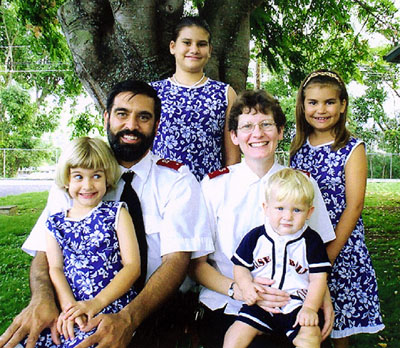
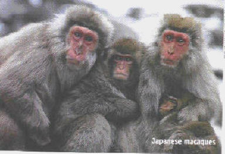

A Human Family

A Macaque Family
Although this exercise is not evidence for Darwin's theory, while you think about the pictures above, consider this story from the Los Angeles Times and 2000 Earth Environmental Service (September, 2000)
Monkey Tragedy
A troup of furious monkeys in India's northeastern state of Assam brought traffic to a standstill after a baby monkey was hit by a car on a busy street. At least 100 of the animals quickly mobilized in the city of Tezpur and encircled the young injured primate. Rajib Saikia, a government information officer, said, "Its hind legs were crushed and it lay listless on the road." He added, "In no time, more than 100 monkeys descended on the street from all directions and blocked off traffic." The angry monkeys kept traffic at bay for more than a half- hour as they tried to care for the infant. A local shopkeeper said: "It was very emotional. . . some of them massaged its legs. Finally, they left the scene carrying the injured baby with them."
As this section of Chapter 3 will make clear, Darwin's theory has no problem interpreting this story. Humans and monkeys are closely related on the evolutionary tree of life, and as primates, we are also mammals. Mammals have a reproductive strategy that requires the evolution of emotion, and all mammals have a neurological structure (the limbic system) in their brains associated with emotion.